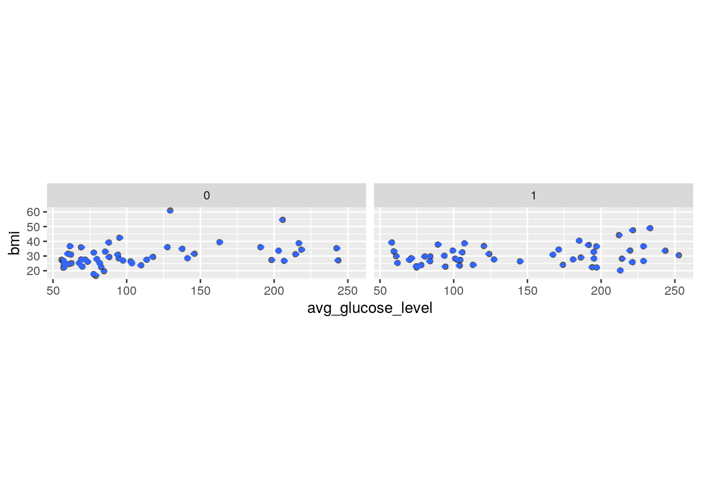
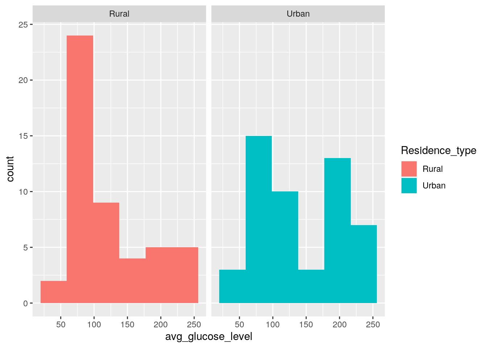
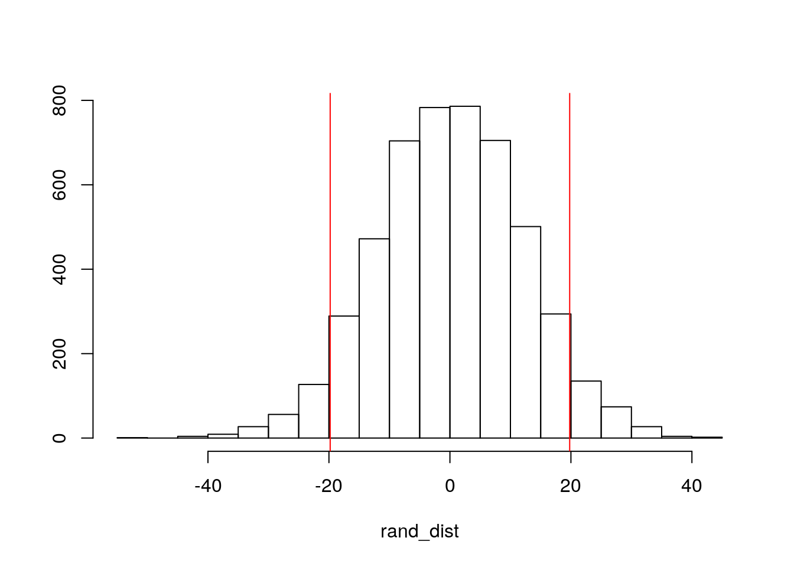
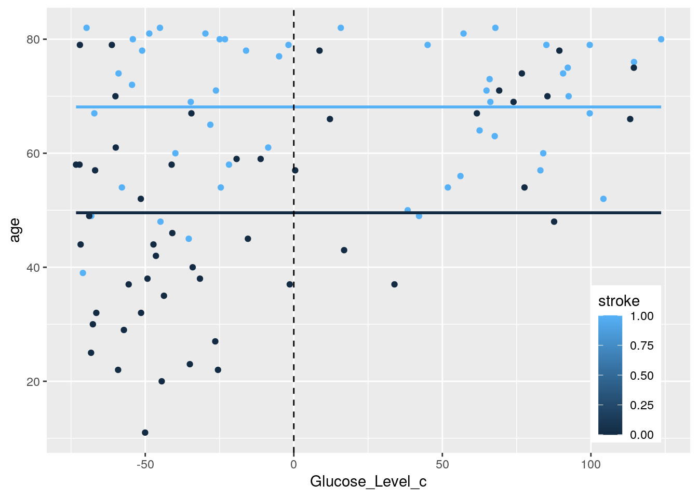
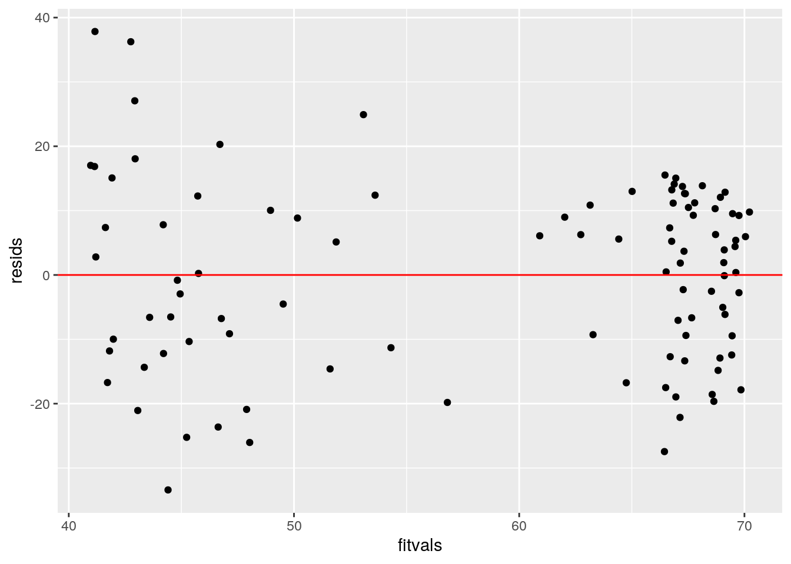
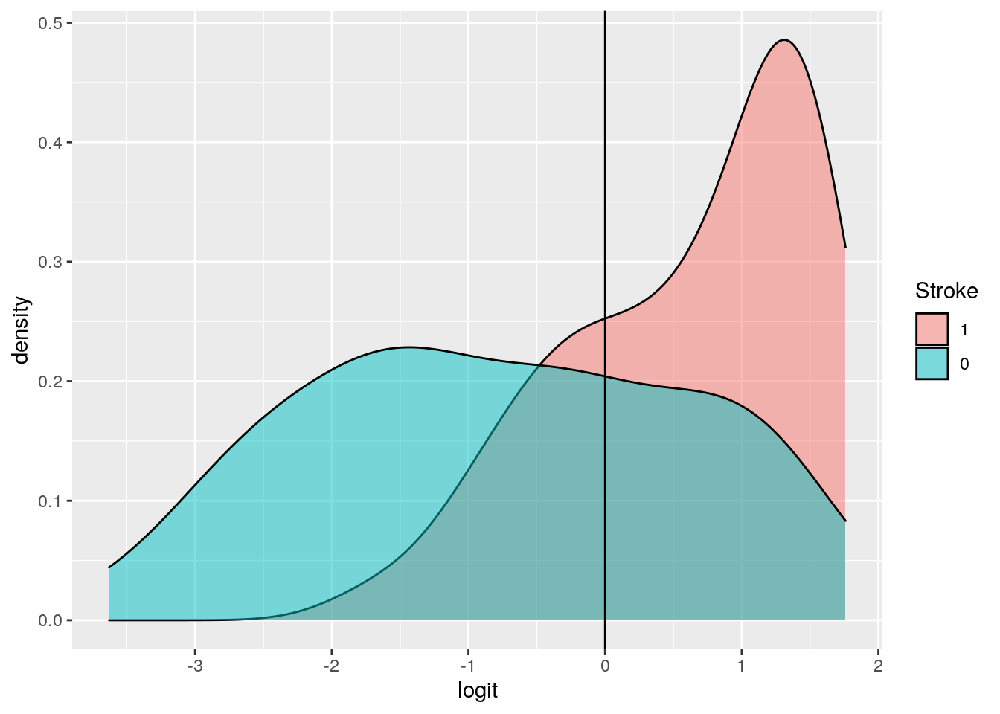
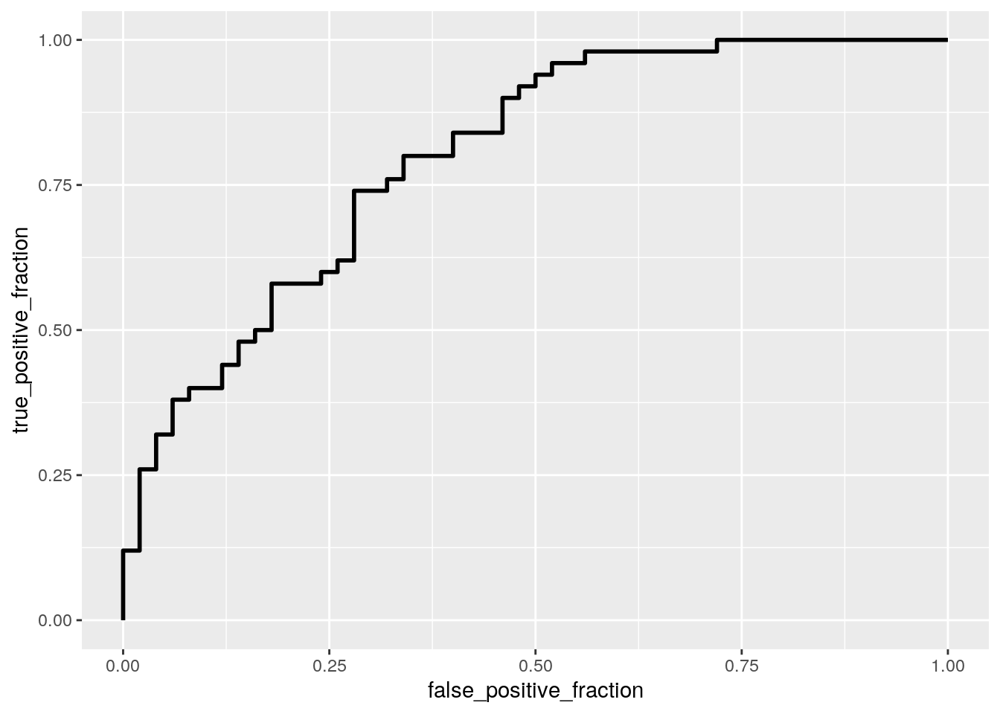
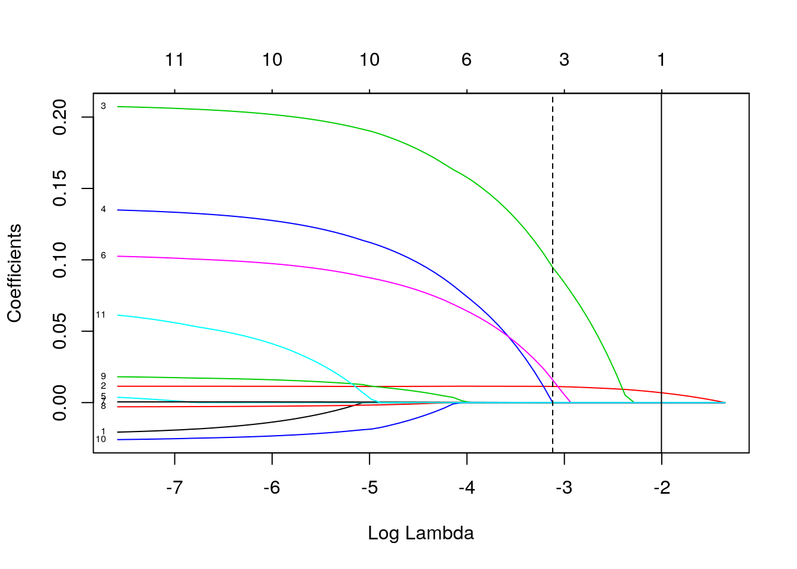

January 1, 0001
0. Introduction
The dataset I selected contains variables that could contribute to strokes. This dataset includes gender, age, hypertension, marital status, occupation, residence, average blood glucose, BMI, and smoking status. In this study, we will see how these different factors contribute to strokes and by how much. These variables will help measure the significance of interaction between them and if they are connected to strokes. There are a total of 100 observations. This project is very meaningful to me because my grandfather who I grew up with passed away after a stroke before I left to college. He is the reason I want to pursue a career in medicine. I hope I can make some conclusions at the end of this project to have a better understand of factors that contribute to strokes.
1. MANOVA
library(tidyverse)## ── Attaching packages ─────────────────────────────────────── tidyverse 1.3.0 ──## ✓ ggplot2 3.3.3 ✓ purrr 0.3.4
## ✓ tibble 3.0.4 ✓ dplyr 1.0.2
## ✓ tidyr 1.1.2 ✓ stringr 1.4.0
## ✓ readr 1.4.0 ✓ forcats 0.5.0## ── Conflicts ────────────────────────────────────────── tidyverse_conflicts() ──
## x dplyr::filter() masks stats::filter()
## x dplyr::lag() masks stats::lag()strokedata<-read.csv("healthcare-dataset-stroke-data-c.csv")
library(ggplot2)
ggplot(strokedata, aes(x = avg_glucose_level, y = bmi)) +
geom_point(alpha = .5) + geom_density_2d(h=2) + coord_fixed() + facet_wrap(~stroke)
library(rstatix)##
## Attaching package: 'rstatix'## The following object is masked from 'package:stats':
##
## filtergroup1<- strokedata$stroke
DVs1 <- strokedata %>% select(avg_glucose_level,bmi,age)
sapply(split(DVs1,group1),mshapiro_test)## 0 1
## statistic 0.8704942 0.9867983
## p.value 5.831203e-05 0.8453035box_m(DVs1, group1)## # A tibble: 1 x 4
## statistic p.value parameter method
## <dbl> <dbl> <dbl> <chr>
## 1 24.5 0.000424 6 Box's M-test for Homogeneity of Covariance Matri…man1<-manova(cbind(avg_glucose_level,bmi)~stroke, data=strokedata)
summary(man1)## Df Pillai approx F num Df den Df Pr(>F)
## stroke 1 0.067228 3.4956 2 97 0.03421 *
## Residuals 98
## ---
## Signif. codes: 0 '***' 0.001 '**' 0.01 '*' 0.05 '.' 0.1 ' ' 1summary.aov(man1)## Response avg_glucose_level :
## Df Sum Sq Mean Sq F value Pr(>F)
## stroke 1 23061 23062 6.5984 0.01172 *
## Residuals 98 342511 3495
## ---
## Signif. codes: 0 '***' 0.001 '**' 0.01 '*' 0.05 '.' 0.1 ' ' 1
##
## Response bmi :
## Df Sum Sq Mean Sq F value Pr(>F)
## stroke 1 1.9 1.904 0.0357 0.8506
## Residuals 98 5229.9 53.367strokedata %>% group_by(stroke) %>% summarize(mean(avg_glucose_level),mean(bmi))## `summarise()` ungrouping output (override with `.groups` argument)## # A tibble: 2 x 3
## stroke `mean(avg_glucose_level)` `mean(bmi)`
## <int> <dbl> <dbl>
## 1 0 114. 30.3
## 2 1 144. 30.6pairwise.t.test(strokedata$avg_glucose_level,strokedata$stroke,p.adj="none")##
## Pairwise comparisons using t tests with pooled SD
##
## data: strokedata$avg_glucose_level and strokedata$stroke
##
## 0
## 1 0.012
##
## P value adjustment method: nonepairwise.t.test(strokedata$bmi,strokedata$stroke,p.adj="none")##
## Pairwise comparisons using t tests with pooled SD
##
## data: strokedata$bmi and strokedata$stroke
##
## 0
## 1 0.85
##
## P value adjustment method: none1-(0.95)^5## [1] 0.22621910.05/5## [1] 0.01A one-way MANOVA was performed to determine the effect of the stroke history (0=No, 1=Yes) on two dependent variables (Average Glucose Level and BMI). Examination of bivariate density plots led us to find that each group revealed stark departures from multivariate normality. Examination of covariance matrices for each group did not reveal relative homogeneity. The MANOVA was considered to not be appropriate analysis technique since many of our assumptions were not met; however, we continued to run further tests. Before, the significant difference were found among the stroke history patients for at least one of the dependent variables, p<0.05. Univariate ANOVAs for each dependent variable were conducted as a follow up and using the Bonferroni to count for Type 1 Error(a=0.05/5), since we performed 1 MANOVA, 2 ANOVAs, and 2 pairwise t test, a total of 5 tests. The probability of getting a Type 1 Error would be 0.226. For the univariate ANOVAs and t test, only the BMI t test was no significant before counting for error. After accounting for the adjustments with the new p value of 0.01, there was no significance found for any of the comparisons.
2. Randomization Test
ggplot(strokedata,aes(avg_glucose_level,fill=Residence_type))+geom_histogram(bins=6.5)+facet_wrap(~Residence_type,ncol=2)
strokedata %>% group_by(Residence_type) %>% summarize(means=mean(avg_glucose_level)) %>% summarize('mean_diff:'=diff(means))## `summarise()` ungrouping output (override with `.groups` argument)## # A tibble: 1 x 1
## `mean_diff:`
## <dbl>
## 1 19.8rand_dist<-vector()
for(i in 1:5000){
new1<-data.frame(avg_glucose_level=sample(strokedata$avg_glucose_level),Residence_type=strokedata$Residence_type)
rand_dist[i]<-mean(new1[new1$Residence_type=="Urban",]$avg_glucose_level)-mean(new1[new1$Residence_type=="Rural",]$avg_glucose_level)}
{hist(rand_dist,main="",ylab=""); abline(v = c(-19.79525, 19.79525),col="red")}
mean(rand_dist>19.79525 | rand_dist < -19.79525)## [1] 0.0964t.test(data=strokedata,avg_glucose_level~Residence_type)##
## Welch Two Sample t-test
##
## data: avg_glucose_level by Residence_type
## t = -1.6446, df = 97.923, p-value = 0.1033
## alternative hypothesis: true difference in means is not equal to 0
## 95 percent confidence interval:
## -43.681233 4.090741
## sample estimates:
## mean in group Rural mean in group Urban
## 118.9812 138.7765I performed a randomization test that determined the mean difference of Average Glucose Level and Residence Type. Null Hypothesis: mean glucose level is the same for rural and urban patients. Alternative Hypothesis: mean glucose level is different for rural and urban patients. We calculated the mean difference between the two residence groups by randomly running 5000 permutations. The calculated p value for the probability of observing an extreme greater than 19.79525 under randomization distribution was 0.0986. Our results indicate that we cannot reject the null hypothesis in that there is approximately a 10% chance that we could get a value of 19.79525 this extreme as the actual mean difference. Since the p value is too large, there is no true mean difference in the population. From the plot above, we can see this interpretation from the null distribution.
3. Linear Regression Model
library(lmtest)## Loading required package: zoo##
## Attaching package: 'zoo'## The following objects are masked from 'package:base':
##
## as.Date, as.Date.numericlibrary(sandwich)
data.frame(avg_glucose_level_c=strokedata$avg_glucose_level-mean(strokedata$avg_glucose_level))## avg_glucose_level_c
## 1 99.6132
## 2 -23.1568
## 3 42.1532
## 4 45.0432
## 5 57.1332
## 6 -58.9868
## 7 -34.6868
## 8 -48.6468
## 9 -8.6168
## 10 -24.5668
## 11 85.0132
## 12 38.3332
## 13 62.5332
## 14 92.2132
## 15 -39.8568
## 16 64.8632
## 17 104.2132
## 18 99.6232
## 19 -26.2068
## 20 -24.9568
## 21 -28.0968
## 22 66.1532
## 23 83.0032
## 24 67.8432
## 25 123.6432
## 26 -44.8768
## 27 -45.0468
## 28 90.6432
## 29 -54.4468
## 30 -68.1668
## 31 -51.0468
## 32 -57.8568
## 33 15.8232
## 34 83.9532
## 35 114.5032
## 36 -21.8168
## 37 -29.7468
## 38 -70.9868
## 39 -1.7868
## 40 -4.9468
## 41 67.6332
## 42 -69.7568
## 43 65.9132
## 44 51.8532
## 45 56.0932
## 46 -54.1768
## 47 -67.1368
## 48 -35.3568
## 49 -16.0668
## 50 92.5032
## 51 -41.1168
## 52 -60.0368
## 53 -51.4868
## 54 114.4532
## 55 -51.4068
## 56 76.7632
## 57 -71.9968
## 58 33.8832
## 59 -55.5768
## 60 -34.0368
## 61 -43.7068
## 62 -44.4568
## 63 -46.4068
## 64 -71.7468
## 65 -61.2368
## 66 0.4632
## 67 -68.8568
## 68 69.1332
## 69 -19.2568
## 70 -68.2368
## 71 -34.4668
## 72 -31.5868
## 73 77.6432
## 74 85.3732
## 75 -73.2968
## 76 -66.4768
## 77 -34.9868
## 78 -11.1568
## 79 61.6232
## 80 -15.4468
## 81 12.1632
## 82 -72.1168
## 83 73.9632
## 84 8.6632
## 85 -47.2368
## 86 113.2232
## 87 -26.4368
## 88 16.9332
## 89 -67.6268
## 90 -40.8868
## 91 -49.2468
## 92 89.3832
## 93 -66.8768
## 94 -59.9268
## 95 -1.3668
## 96 87.6232
## 97 -57.1868
## 98 -25.5168
## 99 -50.0468
## 100 -59.1368strokedata$avg_glucose_level_c<-strokedata$avg_glucose_level-mean(strokedata$avg_glucose_level)
fit<-lm(age~avg_glucose_level_c*stroke,data = strokedata)
summary(fit)##
## Call:
## lm(formula = age ~ avg_glucose_level_c * stroke, data = strokedata)
##
## Residuals:
## Min 1Q Median 3Q Max
## -33.408 -11.433 1.882 10.577 37.836
##
## Coefficients:
## Estimate Std. Error t value Pr(>|t|)
## (Intercept) 51.80420 2.11717 24.469 < 2e-16 ***
## avg_glucose_level_c 0.14778 0.03635 4.065 9.83e-05 ***
## stroke 16.02132 2.98683 5.364 5.62e-07 ***
## avg_glucose_level_c:stroke -0.12839 0.04954 -2.592 0.011 *
## ---
## Signif. codes: 0 '***' 0.001 '**' 0.01 '*' 0.05 '.' 0.1 ' ' 1
##
## Residual standard error: 14.45 on 96 degrees of freedom
## Multiple R-squared: 0.377, Adjusted R-squared: 0.3575
## F-statistic: 19.36 on 3 and 96 DF, p-value: 6.733e-10ggplot(strokedata, aes(y=age, x=avg_glucose_level_c,group=stroke))+geom_point(aes(color=stroke))+ geom_smooth(method="lm",formula=y~1,se=F,fullrange=T,aes(color=stroke))+theme(legend.position=c(.9,.2))+xlab("Glucose_Level_c")+geom_vline(xintercept=0,lty=2)
resids<-fit$residuals; fitvals<-fit$fitted.values
ggplot()+geom_point(aes(fitvals,resids))+geom_hline(yintercept=0, col="red")
ks.test(resids, "pnorm", sd=sd(resids))##
## One-sample Kolmogorov-Smirnov test
##
## data: resids
## D = 0.090677, p-value = 0.3835
## alternative hypothesis: two-sidedsamp_distn<-replicate(5000, {
boot_dat<-boot_dat<-strokedata[sample(nrow(strokedata),replace=TRUE),]
fit<-lm(age ~ avg_glucose_level_c * stroke, data=boot_dat)
coef(fit)
})
samp_distn%>%t%>%as.data.frame%>%summarize_all(sd)## (Intercept) avg_glucose_level_c stroke avg_glucose_level_c:stroke
## 1 2.164749 0.03497079 2.863459 0.04530368coeftest(fit)[,1:2] #Normal_SE## Estimate Std. Error
## (Intercept) 51.8041989 2.11716659
## avg_glucose_level_c 0.1477808 0.03635388
## stroke 16.0213246 2.98682992
## avg_glucose_level_c:stroke -0.1283895 0.04953780coeftest(fit, vcov=vcovHC(fit))[,1:2] #Robust_SE## Estimate Std. Error
## (Intercept) 51.8041989 2.18921100
## avg_glucose_level_c 0.1477808 0.03544674
## stroke 16.0213246 2.92334214
## avg_glucose_level_c:stroke -0.1283895 0.04609502I ran a linear regression model that predicted the interaction between the mean centered glucose level and stroke status of patients to determine its effects with age. We will test whether stroke status has an effect with age by the mean glucose level. From the coefficients, we can see that the mean age for someone with no stroke history and average glucose levels will be an age of 51.8. Additionally, patients with stroke history status with average glucose levels are predicted to be 16 years more than those with no stroke history, showing significance. This means that the older one is the more likely of a stroke status, which make sense. Moreover, we see that glucose levels are significantly paired with age for those with no strokes; thus as glucose level increases by one, that patients age will increase by 0.178. Lastly, the coefficient for the interaction variables show significance in that the slope of glucose levels on age for patients with stroke history is 0.128 significantly lesser than patients with no stroke history. This was truly fascinating in that I expected the slope to be greater(positive) and stronger for stroke patients, since strokes and high glucose could potentially be seen to increase as one gets older; however these results prove otherwise. Our adjusted R squared value gives the proportion explained by the regression. Here, we see that the model accounts for 35.75% of the variation, while 64.25% is to randomness or other confounding factors. To check for met assumptions, I made a graph to see linearity and homoskedastically; however, the points were very spread out and there was also a clustered region; therefore I came to the conclusion that it failed to meet these assumptions. Also, I ran a One-sample Kolmogorov-Smirnov test that check for normality, and this failed to meet the assumption as well with a large p value of 0.3835. Afterwards, we recomputed the regression results and compared the normal theory standard errors to the robust standard errors. We can see that the robust standard errors are larger for all the comparisons, while the estimates remain constant. Therefore, we can conclude that the before SE are more specific (less conservative) in range as compared to the after, robust SE. These SE results line up with the violated assumptions, since it is heteroskedastic we should use robust standard errors!
4. Bootstraped
fit<-lm(age~avg_glucose_level+stroke,data=strokedata)
resids<-fit$residuals
fitted<-fit$fitted.values
resid_resamp<-replicate(5000,{
new_resids<-sample(resids,replace=TRUE)
strokedata$new_y<-fitted+new_resids
fit<-lm(new_y~avg_glucose_level+stroke,data=strokedata)
coef(fit)
})
resid_resamp%>%t%>%as.data.frame%>%summarize_all(sd) #Bootstrapped_SE## (Intercept) avg_glucose_level stroke
## 1 3.554722 0.02491784 3.052585coeftest(fit)[,1:2] #Normal_SE## Estimate Std. Error
## (Intercept) 40.60404771 3.57778275
## avg_glucose_level 0.07863631 0.02541251
## stroke 16.17165798 3.07301162coeftest(fit, vcov=vcovHC(fit))[,1:2] #Robust_SE## Estimate Std. Error
## (Intercept) 40.60404771 3.95782069
## avg_glucose_level 0.07863631 0.02419533
## stroke 16.17165798 3.08441430I re-ran the same regression model and computed the bootstrapped standard errors (residuals) to compare to the robust and normal standard errors. I chose to use the residuals rather than the rows because I wanted to produce a standard error that was more liberal(specific) rather than conservative with a larger value. After comparing all the standard errors (normal, robust, bootstrapped), it was reported that the standard errors for the bootstrapped residuals were smaller for our intercept and stroke. There was a surprising find in that our robust SE was the smaller than the normal and bootstrapped SE for average glucose level.
5. Logistic Regression Model (2 variable)
class_diag<-function(probs,truth){
tab<-table(factor(probs>0.5,levels=c("FALSE","TRUE")),truth)
acc=sum(diag(tab))/sum(tab)
sens=tab[2,2]/colSums(tab)[2]
spec=tab[1,1]/colSums(tab)[1]
ppv=tab[2,2]/rowSums(tab)[2]
if(is.numeric(truth)==FALSE & is.logical(truth)==FALSE)
truth<-as.numeric(truth)-1
ord<-order(probs,decreasing=TRUE)
probs<-probs[ord];truth<-truth[ord]
TPR=cumsum(truth)/max(1,sum(truth))
FPR=cumsum(!truth)/max(1,sum(!truth))
dup<-c(probs[-1]>=probs[-length(probs)],FALSE)
TPR<-c(0,TPR[!dup],1);FPR<-c(0,FPR[!dup],1)
n<-length(TPR)
auc<-sum(((TPR[-1]+TPR[-n])/2)*FPR[-1]-FPR[-n])
data.frame(acc,sens,spec,ppv,auc)
}
fit<-glm(stroke~age+bmi+avg_glucose_level,data=strokedata,family = "binomial")
exp(coeftest(fit))##
## z test of coefficients:
##
## Estimate Std. Error z value Pr(>|z|)
## (Intercept) 0.0099036 4.4104470 0.0446 1.002
## age 1.0742798 1.0173818 63.9356 1.000
## bmi 0.9995869 1.0344141 0.9879 2.692
## avg_glucose_level 1.0025844 1.0043236 1.8190 1.733probs<-predict(fit,type="response")
table(predict=as.numeric(probs>0.5),truth=strokedata$stroke) %>% addmargins()## truth
## predict 0 1 Sum
## 0 36 14 50
## 1 14 36 50
## Sum 50 50 100class_diag(probs,strokedata$stroke)## acc sens spec ppv auc
## 1 0.72 0.72 0.72 0.72 -3.4442strokedata$logit<-predict(fit,type="link")
strokedata$Stroke<-factor(strokedata$stroke,levels=c("1","0"))
ggplot(strokedata,aes(logit,fill=Stroke))+geom_density(alpha=0.5)+geom_vline(xintercept=0)
library(plotROC)
ROCplot<-ggplot(strokedata)+geom_roc(aes(d=stroke,m=probs), n.cuts=0); ROCplot
calc_auc(ROCplot)## PANEL group AUC
## 1 1 -1 0.7988We determined from this logical regression predicting stroke from Age, BMI, and Average Glucose Level. Every one unit increase in Age multiples the odds by a factor of 1.0743. Every one unit increase in BMI multiples the odds by a factor of 0.9996. Every one unit increase in Glucose Level multiples the odds by a factor of 1.0026. However, looking at the results, we can see the that p values are not significant for both the intercept, age, BMI, and average glucose level meaning there could be errors and other factors affecting these results showing no predictability. We found the Accuracy, Sensitivity (TPR), Specificity (TNR), Precision (PPV), and AUC of this model, all producing 0.72, with the exception of AUC being 0.7988. This means that AUC is predicting overall how well our model is giving it a fair grade. From our density plot, we can see that there is overlap, but still a difference in densities of stroke status to determine it. A ROC curve was created that represents the connections between sensitivity and specificity. Additionally, our figure above has an AUC of 0.7988 produces a fair grade for our model.
6. Logistic Regression Model (ALL)
strokedata1<-strokedata%>%select(-avg_glucose_level_c)%>% select(-work_type) %>% select(-logit) %>% select(-Stroke)
fit70<-glm(stroke~(.), data=strokedata1, family="binomial")
prob70<-predict(fit70,type="response")
class_diag(prob70,strokedata1$stroke)## acc sens spec ppv auc
## 1 0.76 0.76 0.76 0.76 -2.8926k=10
set.seed(348)
data <- strokedata1 %>% sample_frac
folds <- ntile(1:nrow(data),n=10)
diags<-NULL
for(i in 1:k){
train <- data[folds!=i,]
test <- data[folds==i,]
truth <- test$stroke
fit <- glm(stroke~(.), data=train, family="binomial")
probs <- predict(fit, newdata=test, type="response")
diags<-rbind(diags,class_diag(probs,truth))
}
summarize_all(diags,mean)## acc sens spec ppv auc
## 1 0.68 0.6890476 0.6760714 0.6621429 0.01239286library(glmnet)## Loading required package: Matrix##
## Attaching package: 'Matrix'## The following objects are masked from 'package:tidyr':
##
## expand, pack, unpack## Loaded glmnet 4.1-1y<-as.matrix(strokedata1$stroke)
x<-model.matrix(stroke~.,data=strokedata1)[,-1]
cv <- cv.glmnet(x,y)
{plot(cv$glmnet.fit, "lambda", label=TRUE); abline(v = log(cv$lambda.1se)); abline(v = log(cv$lambda.min),lty=2)}
cv<-cv.glmnet(x,y,family="binomial")
lasso<-glmnet(x,y,family="binomial",lambda=cv$lambda.1se)
coef(lasso)## 12 x 1 sparse Matrix of class "dgCMatrix"
## s0
## (Intercept) -2.24640238
## genderMale .
## age 0.03795376
## hypertension .
## heart_disease .
## ever_marriedYes .
## Residence_typeUrban .
## avg_glucose_level .
## bmi .
## smoking_statusnever smoked .
## smoking_statussmokes .
## smoking_statusUnknown .set.seed(348)
k=10
data <- strokedata1 %>% sample_frac
folds <- ntile(1:nrow(data),n=10)
diags<-NULL
for(i in 1:k){
train <- data[folds!=i,]
test <- data[folds==i,]
truth <- test$stroke
fit <- glm(stroke~age,data=train, family="binomial")
probs <- predict(fit, newdata=test, type="response")
diags<-rbind(diags,class_diag(probs,truth))
}
diags%>%summarize_all(mean)## acc sens spec ppv auc
## 1 0.69 0.7157143 0.6752381 0.6857143 0.31425In our final test, we conducted a logistic regression model that predicted stroke for a patient using all of our variables. To test all of these variables, we created a fit model that produced an Accuracy (0.76), Sensitivity(0.76), Specificity(0.76), Precision(0.76), and an AUC (-2.8926). From this model, we can’t interpret that the AUC since it is extremely bad! Additionally, we can see that the proportion of correctly classified is the same as the proportion of stroke(TPR) vs non-stroke(TNR) classified patient in their respective proportions. Next, we performed a 10 fold CV and found that all of our diagnostics (acc,sens,spec,ppv,auc) all decreased significantly. This simpler model performed much better and its AUC grade is now bad (0.0124) as compared to the previous AUC which was a -2.8926. Following this, we performed a LASSO on the same variables and from our matrix we were able to determine that the only contributing variable is AGE! We can conclude from our lasso that age is the most important predictor for determining stroke. We then followed up with a new 10-fold CV only using age. Surprisingly, we found our diagnostics to increase. Sadly, our AUC grade is still bad(0.3143), but when compared to the extremely bad AUC from the ALL variable 10-fold CV, it is much better and allows use to gain a greater insight into these results! Lastly, we can also see that our sensitivity increased the greatest from the previous examination.
Conclusion & Personal Statement
Though we did not find much significance from our variables, we were able to determine that age does have an effect on predictability for strokes. As I reflect on my personal experience, I would like to state that this project was one of the most meaningful studies I have ever done. This project is dedicated to my grandfather who played an instrumental role in my life. I was disappointed to not find more variables that could have contributed to strokes, but perhaps I could use this as motivation to continue this investigation in the future.
knitr::include_graphics("family.jpg")